Паровой очиститель BORK V602
Очистка паром
Водяной пар существовал на земле ещё задолго до того, как человечество стало задумываться над чистотой. Пар образуется в вулканах и гейзерах. В земной атмосфере пар поддерживает приятные средние температуры и делает возможной нашу жизнь. Приблизительно 2300 лет назад математик и физик Архимед первым задался возможностями технического применения пара. Но только в 18 веке нашлось практическое его применение, и паровой двигатель стал применяться повсеместно. Самой же современной и естественной формой использования пара является его применение для чистки.
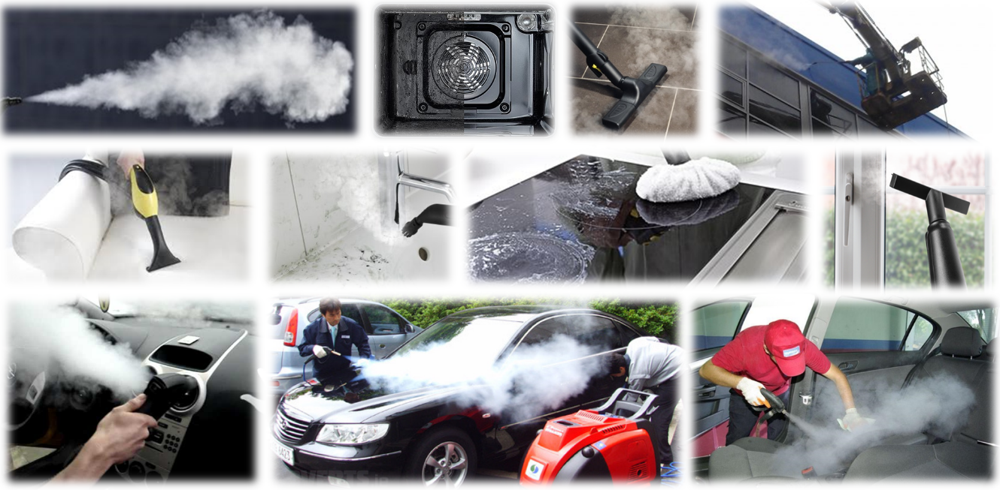При превращении воды в пар её объём увеличивается в 1700 раз. Секрет чистки паром кроется в сочетании давления, его насыщенности и температуры. За счет этих высоких показателей не только легче отстает грязь, но и Вы можете легче подобраться к труднодоступным местам и вычистить их лучшим образом. Чистящую силу пара можно поддержать путем механического воздействия, например, щеткой или салфеткой.
При этим очистку паром давно полюбили профессионалы и применяют для очистки фасадов зданий, вывесок, стекол, чистки машин как внутри, так и снаружи, чистки профессионального оборудования в пищевой промышленности, клининга офисов, домов и даже улиц.
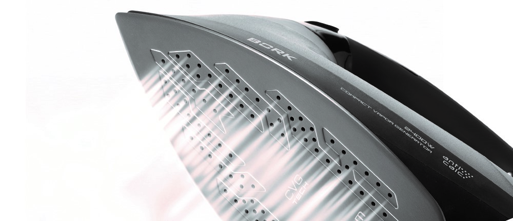Вода в паре находится сразу в двух агрегатных состояниях - газообразном и жидком. Вода «как жидкость» образована из мельчайших капелек, которые визуально и воспринимаются как пар. Количество этих капель определяет свойства пара. Если их мало или почти нет, пар называется сухим. Он способен проникать глубоко в ткань, прогревая ее и при этом не увлажняя, вот почему он широко используется в парогладильных системах, утюгах и т. д.
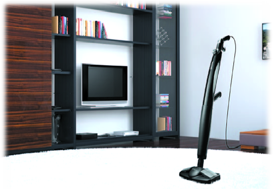И наоборот, влажный пар включает в свой состав много воды в виде мельчайших капель. Он лучше уничтожает все загрязнения, позволяет добраться к самым недоступным местам и удалить из них накопившуюся грязь, смачивает обрабатываемую поверхность, не давая загрязнениям снова засохнуть, и широко применяется в пароочистителях. При этом чем выше температура влажного пара, тем лучше. А согласно законам физики - температура взаимосвязана с давлением.
Высокая температура, пар и давление обеспечивают высокие бактерицидные и очищающие способности, позволяют полностью отказаться от поверхностно-активных веществ. Теперь чистота в доме обеспечивается без всякой химии! Это свойство незаменимо для людей, страдающих аллергическими заболеваниями и высоко ценится заботящимися о своём здоровье и благополучии своих близких!
Bork V602 – это ЭКОлогично
BORK V602 служит прекрасным дополнением обычной уборке
Безвредно для людей и окружающей среды
Не просто чисто, а безупречно чисто
Является альтернативной технологией
Продуманная конструкция пароочистителя BORK V602, широкий выбор насадок и аксессуаров позволяют использовать паровой очиститель для комплексной очистки всего дома. Пароочиститель BORK V602 дарит заслуженный отдых от домашней рутины. С ним Вы легко очищаете самые сильные загрязнения на кафеле, плитке, стенах, обивке мягкой мебели. Мощный поток пара очищает и дезинфицирует поверхности, устраняя аллергены, бактерии и вредные микроорганизмы – воздух наполняется свежестью, атмосфера становится здоровой.
Аргументы для продажи BORK V602
- Быстрый нагрев
- Продолжительная подача пара
- Использование любых тканевых аксессуаров
- Работа под любым углом
- Плавная регулировка и контроль парообразования
- Широкий спектр обрабатываемых поверхностей
Устройство
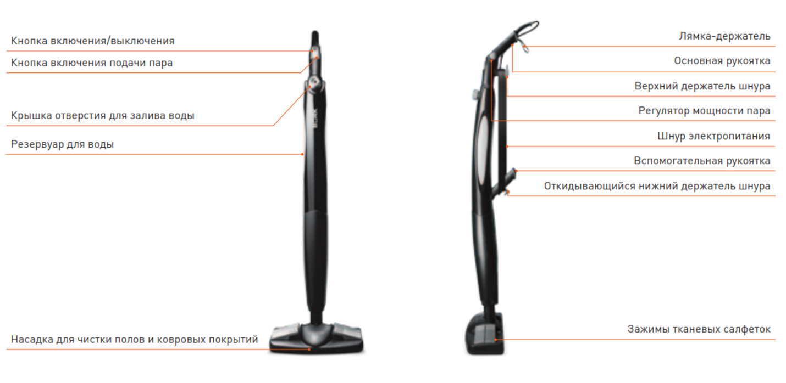Пароочиститель изготовлен из АБС-пластика и поликарбоната.
АБС-пластик обладает повышенной ударопрочностью. Применяется для изготовления корпусов бытовой техники, корпусов промышленных аккумуляторов, спортинвентаря, деталей оружия, контейнеров, чемоданов и т.д.
Поликарбонат был получен впервые более 100 лет назад. Благодаря сочетанию высокой прочности, ударостойкости и малому весу широко используется для изготовления прозрачной кровли теплиц, пентхаусов, террас, бассейнов, наземных переходов, антивандальных покрытий экранов, бронированных стекол автомобилей, защитных шлемов для экстремальных дисциплин, фонарей, сотовых телефонов, фотоаппаратов, компакт дисков и качественной бытовой техники.
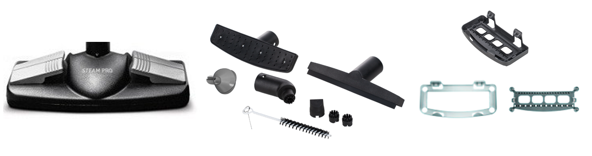Для решения различных задач пароочиститель укомплектован большим количеством насадок:
- Насадка для чистки полов и ковровых покрытий
- Универсальная насадка
- Насадка с резиновым валиком
- Насадка для интенсивной чистки
- Насадка-дефлектор
- Сменные щетки
- Воронка для залива воды
- Щетка и игла для чистки
- Приспособление для чистки ковровых покрытий
- Приспособление для выравнивания ворса
Все насадки оснащены фиксаторами, как в качественных пылесосах.
Ворс на насадках изготовлен из нейлона. Нейлон - первый синтетический полимер, был произведен в 1935 году в лаборатории компании DuPont. Его физические свойства превосходят свойства некоторых металлов. Нейлон имеет невероятное сочетание свойств - высокую прочность, среднюю жесткость и устойчивость к температуре.
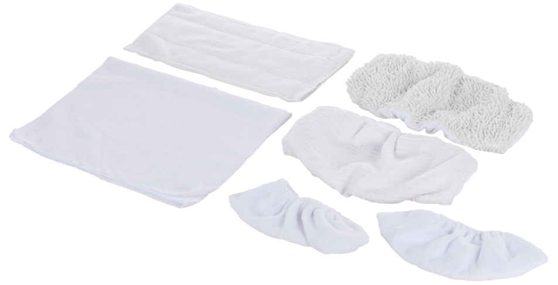Задача тканевых насадок – впитывать загрязнения и влагу.
- Тканевая салфетка для твердых покрытий
- Тканевая салфетка для ковровых покрытий
- Тканевая насадка для премиальных твердых покрытий
- Тканевая насадка для твердых покрытий
- Тканевая насадка для мебели, штор, настенной плитки 2 шт.
Тканевые салфетки изготовлены из микрофибры - синтетического волокна, изобретенного в Японии, толщиной в несколько микрон. Современная нить при длине в 100 километров весит всего 6 граммов, ткань из нее получается прочной и долговечной, при этом более «губчатой» и обладает повышенной способностью абсорбировать различные загрязнения, жиры, жидкости безо всяких следов и разводов. При этом не оставляет после себя волокон, не линяет, не скатывается, быстро сохнет, не разрушается под воздействием бактерий.
Быстрый старт и непрерывная работа
Парогенератор без использования бойлера позволяет получить пар всего через 30 секунд. В бойлерных пароочистителях до подачи пара приходится ждать до 10 минут, в том числе каждый раз, когда заканчивается вода.
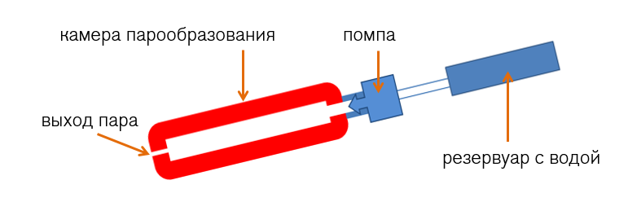С помощью встроенной помпы вода из резервуара непрерывно поступает непосредственно к испарителю, где преобразуется в пар. Технология непрерывного действия парообразования без использования бойлера не требует дополнительного времени для охлаждения системы при наполнении резервуара очередной порцией воды и дальнейшего нагрева.
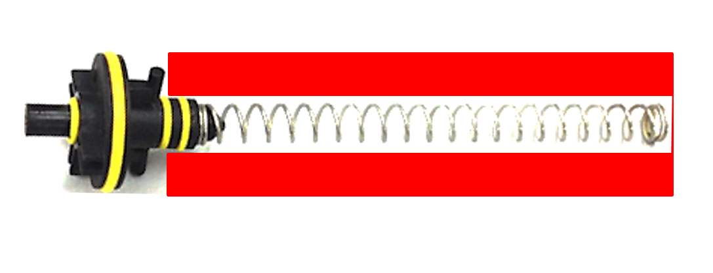В камере парообразования находится стальная пружина, способствующая образованию более мелких частиц пара и дополнительному повышению температуры пара.
Камера парообразования изготовлена из многокомпонентного сплава алюминия. Повышена устойчивость к коррозии, увеличена теплопроводность, теплоотдача, прочность и надежность, сокращено время нагрева, снижен вес устройства. Нагревательный элемент интегрирован в стенки камеры парообразования.
Системы безопасности:
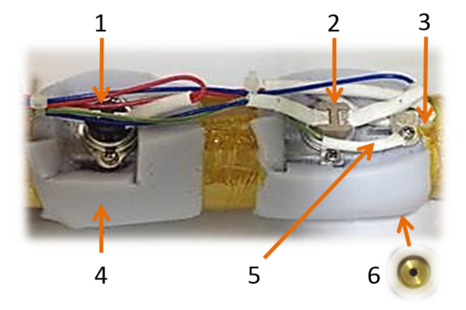- Датчик температуры, контролирующий минимальное значение для начала подачи воды
- Основной контролирующий датчик температуры камеры парообразования
- Предохранитель – для безопасности
- Теплоизоляция – не греется корпус
- Заземление – для безопасности
- Клапан избыточного давления
Встроенный цифровой регулятор мощности помпы
В зависимости от того, какую поверхность вы очищаете – твердую или мягкую, кафель или паркет – выбирайте режим высокой или низкой подачи пара. Очень удобно, что регулятор мощности пара расположен прямо на ручке.
Диапазон парообразования: 15–35 г/минуту
Продолжительность цикла работы: 25 - 45 минут
Особенностью пароочистителя BORK V602 является возможность его использования под любым углом, что значительно расширяет его возможности.
Особенности насадок паровой швабры BORK V602
Насадка для чистки полов и ковровых покрытий
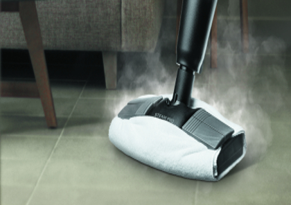Основная насадка используется для чистки ламината, линолеума, керамической, гранитной и каменной плитки. Сделайте ваш пол естественно чистым без использования химических средств и всего лишь одним движением руки.
Специальные боковые зажимы позволяют использовать любые неоригинальные тканевые насадки.
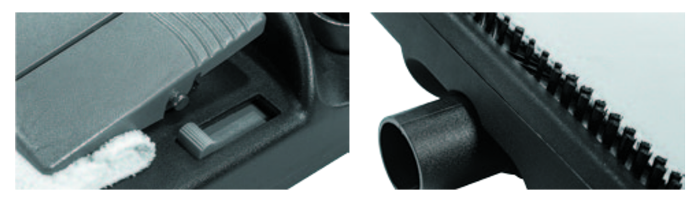Еще одной особенностью насадки является то, что можно с помощью слайдеров выдвинуть щетку у основания насадки. Двойные боковые зажимы позволяют закрепить тканевую салфетку на закрывая выдвижную щетку. При таком использовании чистка будет эффективной даже при удалении стойких загрязнений.
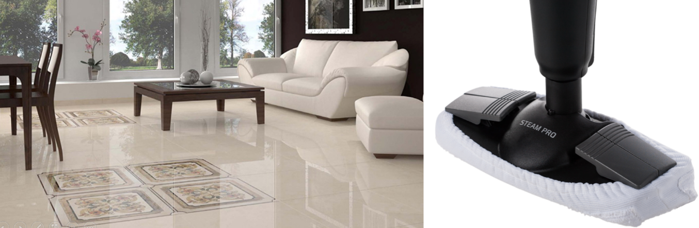Благодаря резинке тканевые насадки плотно обхватывает щетку. Боковые зажимы надежно фиксируют тканевую насадку, предотвращая её сдвигание.
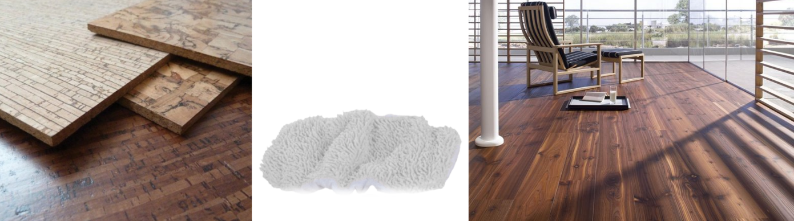Деликатная тканевая насадка имеет увеличенную толщину и мягкий ворс. Не повреждает и не переувлажняет такие премиальные покрытия как паркет, винил, деревянные и даже пробковые полы.
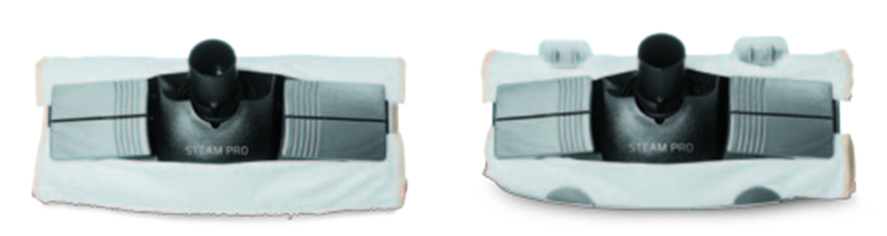Специальная фиксирующая рамка и двойные боковые зажимы надежно фиксируют тканевую салфетку на насадке, позволяя легко перемещать пароочиститель по ковру.
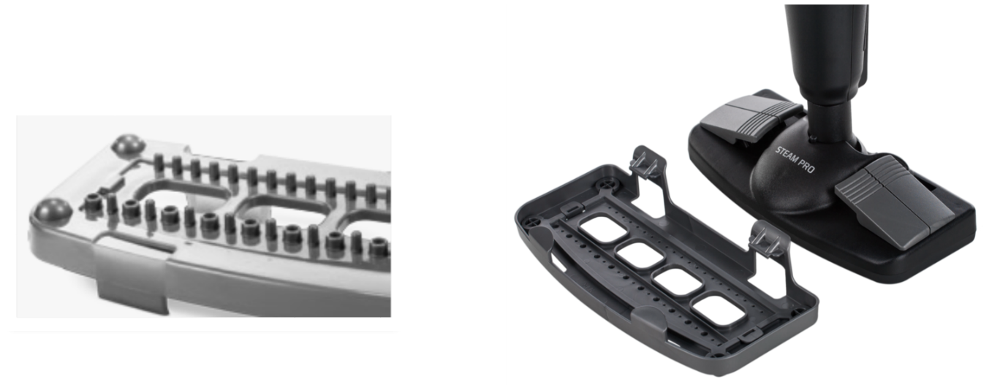После паровой чистки ковровых покрытий, можно воспользоваться специальным приспособлением для выравнивания ворса, что придаст им привлекательный и ухоженный вид.
Универсальная насадка
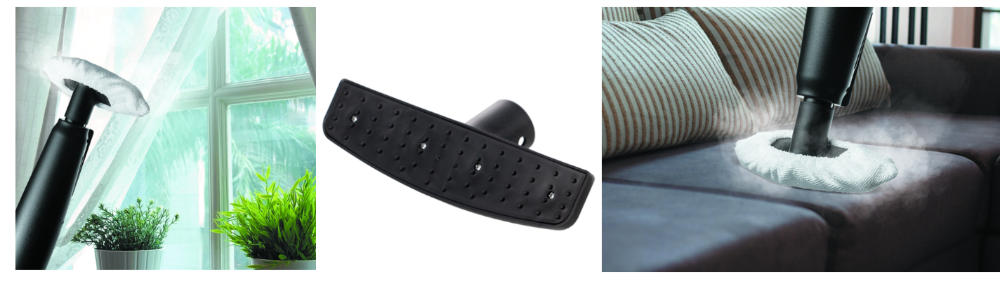Предназначена для чистки плитки, корпусной мебели, столешниц на кухне и ванной комнате, обивки мягкой мебели, штор, занавесок, предметов гардероба. Также её можно использовать для обработки и удаления биологических загрязнений и аллергенов с постельного белья, матрасов, подушек и детских игрушек. При работе с универсальной насадкой используйте специальные тканевые насадки. Именно применение пара позволит надолго избавиться не только от вредоносных микроорганизмов, живущих в пыли, но и от продуктов их жизнедеятельности. Будьте уверены, после чистки паром, длительное время с вами не будут соседствовать пылевые клещи и другие микроорганизмы.
Насадка для стекол и зеркал

Во избежание повреждения стекла под воздействием горячего пара, перед обработкой стеклянную поверхность необходимо предварительно нагреть. Для этого вначале обработайте загрязненную поверхность на расстоянии 20–30 см, а затем постепенно уменьшайте расстояние на 10–15 см. Насадка используется для удаления загрязнений с гладких поверхностей, окон, зеркал, кафеля, душевых кабин. Поверхности не царапаются и остаются сухими после чистки благодаря мягкой эластичной вставке
Насадка для интенсивной чистки
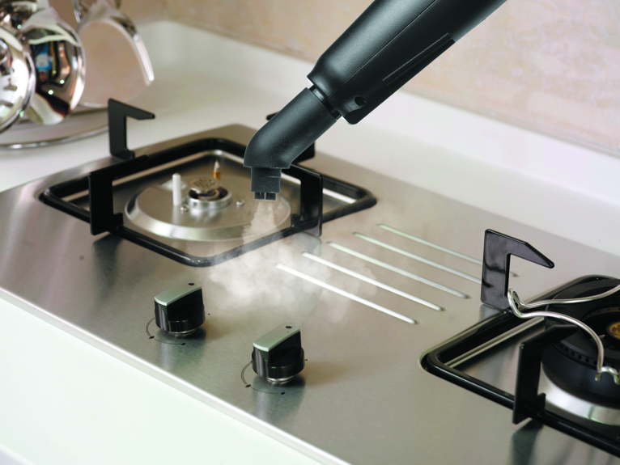Данная насадка предназначена для чистки раковин, смесителей, рабочих и варочных поверхностей на кухне, душевых кабин и ванн, удаления стойких загрязнений и очистки швов между плитками.
Насадка – дефлектор
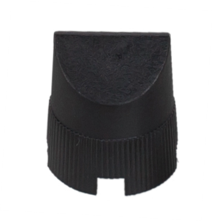Насадка-дефлектор точно направляет струю пара в центр рабочей поверхности насадки, в результате чистка становится более эффективной. Используйте совместно с универсальной насадкой, насадкой для стекол и зеркал и насадкой для интенсивной чистки.
Простая чистка и уход
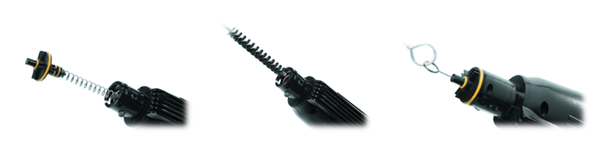Открутите крышку резервуара для воды. Слейте оставшуюся воду. Заполните резервуар водой, встряхните и вылейте воду. Повторите 2–3 раза. Тканевые салфетки и тканевые насадки можно стирать при температуре 40–60 °С. Используйте жидкие моющие средства. Не используйте отбеливатели или смягчители ткани. Извлеките клапан вместе для выхода пара с пружиной. Поместите в отверстие щетку для чистки. Возвратно-поступательными и вращательными движениями очистите камеру от известкового налета. Установите клапан обратно. Рекомендуется чистить отверстие для выхода пара после каждых 10–15 использований. После каждого использования очищайте клапан выхода пара с помощью специальной иглы. Теперь появился контроль состояния камеры образования, а несложная чистка позволяет увеличить срок эксплуатации пароочистителя.
Пароочиститель не занимает много места.
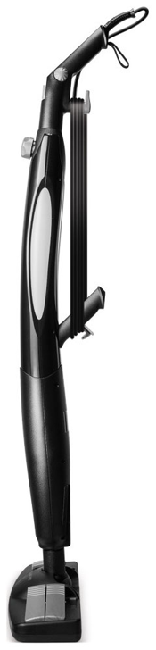После эксплуатации смотайте сетевой шнур и зафиксируйте на специальных держателях, которые находятся на корпусе прибора. Для хранения используйте вертикальную парковку. Так же его можно повесить на лямку-держатель.
Технические характеристики
Мощность: 1400 Вт
Время цикла работы: 25 - 45 минут
Контроль парообразования: 15 - 35 г/мин
Резервуар для воды: 800 мл
Кол-во насадок: 5 шт.
Кол-во сменных щеток: 2 шт.
Кол-во приспособлений: 2 шт.
Кол-во тканевых аксессуаров: 6 шт.
Длина электрического кабеля: 5,1 м
Габариты (В×Ш×Г): 104 × 8 × 16 см
Страна изготовления: Китай
Гарантия: 1 год